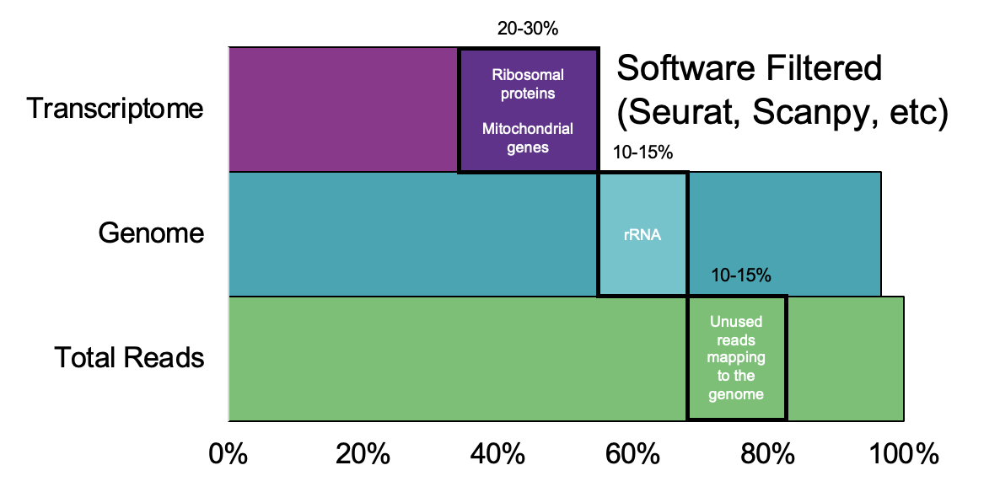

Why Single-Cell Sequencing Wastes Most of Its Own Data
Single-cell RNA sequencing (scRNA-seq) has become the workhorse technology for immunology and cancer research, largely because it can assign a transcriptomic fingerprint to thousands of individual cells and use that fingerprint to identify cell type, state, and lineage. Doing that well requires real sequencing depth — production scRNA-seq experiments routinely target upward of 100 million reads. Here's the uncomfortable part: the software that actually does the cell-type classification — Seurat, Cell Ranger, and their peers — draws its signal from a comparatively small number of genes. The overwhelming majority of reads in a typical scRNA-seq library map to ribosomal RNA and a modest set of housekeeping genes that are highly expressed in essentially every cell type and therefore useless for telling cell types apart. Those reads aren't wrong, exactly. They're just not doing any of the work the experiment is paying for.
That's a familiar shape of problem to anyone who's read the pandemic-preparedness or newborn-screening work on this site: an assay drowning a small informative signal in a large, predictable, biologically uninteresting one. The fix, unsurprisingly, followed the same logic — if the noise is a known, enumerable set of molecules, deplete it before sequencing rather than filtering it out of the data afterward. What made this project distinct was the discovery work required to know, with confidence, exactly which genes were safe to remove without quietly degrading the biology every researcher actually cares about.
The Scientific Approach: Subtracting the Predictable, Not the Unknown
Unlike targeting a single well-characterized pseudogene, "figure out what's safe to remove from a single-cell library" is an empirical question that has to be answered tissue by tissue. A gene that's transcriptionally silent and irrelevant in blood might be a meaningful marker in liver or brain. So the first phase of this project was less CRISPR design and more data science: we assembled publicly available scRNA-seq datasets from SRA and other archives across a range of tissue types — blood, PBMCs, liver, brain, and others — and systematically characterized, for each tissue type, which genes the standard classification tools (Seurat, Cell Ranger) simply don't use when assigning cell identity.
For each of those uninformative-but-abundant genes, we estimated what fraction of a typical library's reads they consume. That number is what turns "this gene doesn't help classification" into a business case for depleting it — a gene that's unused but only 0.1% of reads isn't worth the assay complexity; a handful of genes eating double-digit percentages of sequencing output, across many tissue types, absolutely are. That tissue-by-tissue empirical screen, done before any guide RNA was designed, is what let the eventual CRISPR panel target the genes that actually mattered for yield without gambling on genes that might matter for some cell type nobody had tested yet.
Building the Computational Pipeline
With target genes identified, the engineering work had its own platform-specific wrinkles that don't show up in a simpler single-target depletion assay:
- Designing guides that leave the informative transcriptome untouched. The CRISPR-gRNA panel had to selectively deplete the identified high-abundance, low-information transcripts while leaving every other gene's representation in the library statistically undisturbed — verified by comparing per-gene read proportions before and after depletion across the full panel of test tissues, not just the targeted genes.
- Respecting library-prep geometry. Different single-cell and long-read platforms capture different parts of a transcript, and a depletion guide has to be positioned where the library actually has sequence to cut. 10x Genomics' Chromium instrument captures predominantly the 3′-end of transcripts via its droplet-based microfluidics and bead chemistry, while other platforms capture the 5′-end or the whole transcript. A guide RNA panel designed against one capture geometry can simply miss its target on a platform with a different one, so the design process had to explicitly account for where, along each transcript, the library molecule would actually still contain the target sequence.
- Validating against real single-cell outputs, not just bulk proxies. The metric that mattered wasn't "did depletion work in a bulk RNA-seq library" — it was whether downstream single-cell analysis (clustering, cell-type annotation, marker-gene detection) looked the same or better after depletion, at a fraction of the sequencing depth. That required running full single-cell analysis pipelines on paired depleted/non-depleted datasets and comparing the biology that came out the other end, not just read-count statistics.
The resulting product, DepleteX Single Cell RNA Boost, let researchers either recover more usable reads at the same sequencing depth or cut sequencing depth roughly in half while preserving dataset quality — a direct cost lever for labs running single-cell experiments at scale.
Two Platform Partnerships, One Underlying Idea
The same core idea — remove the predictable, abundant, uninformative molecules before sequencing — turned out to generalize cleanly to a very different platform: Pacific Biosciences' long-read MAS-Seq and MAS-Iso-Seq workflows, which concatenate long transcriptomic fragments to enable more accurate full-length isoform discovery and quantification. I incorporated PacBio's own bioinformatics pipelines to functionally evaluate whether CRISPR-based depletion of nucleic acids improved SMRT-seq library prep the same way it improved short-read scRNA-seq, and worked jointly with PacBio's technical teams to support customers using both companies' products together.
Both 10x Genomics and Pacific Biosciences ultimately recognized CRISPRclean-based products as companion technologies for their platforms — a meaningful validation, since companion-product status generally requires a technical partner to independently confirm that a third-party product measurably improves outcomes on their instrument, not just that it's compatible with it.
Impact
The same underlying depletion chemistry, tuned for the simpler problem of bulk ribosomal RNA removal, also powers a family of ribodepletion products compatible with library-prep workflows from Revvity, NEBNext, Illumina, Takara, Watchmaker, and Qiagen. That product line — the least glamorous-sounding of everything described here, and the most commercially important — has been Jumpcode's highest revenue generator to date. It's a useful data point on its own: the flashiest application of a platform technology (agnostic pathogen detection, single-cell optimization) is often not where the majority of its commercial value ends up. Sometimes it's the boring, universal version of the same idea, sold into every lab already running the most common assay in the field.